Thelio Massive (Parts & Repairs)
Many components in your Thelio Massive can be upgraded or replaced as necessary. Power the machine off, switch off the power supply, and unplug all peripherals before working with any internal components. Then, follow these step-by-step guides for instructions:
- Removing the top case
- Removing the inner partition
- Adding/removing 2.5" storage drives
- Replacing the case fans
- Replacing a GPU
- Replacing the M.2 drive
- Removing the CPU duct
- Replacing the RAM
- Replacing the CPU fans
- Replacing the CPU cooler
- Replacing the CPU/thermal paste
- Replacing the top exhaust fans
- Troubleshooting the power button
- Troubleshooting the Thelio-IO USB connection
Removing the top case:
The top case can be removed to access the internal components.
Tools required: Cross-head (Phillips) screwdriver (optional)
Time estimate: 2 minutes
Difficulty: Easy ●
Steps to remove the top case:
- Remove the eight outer screws holding the top case onto the machine.
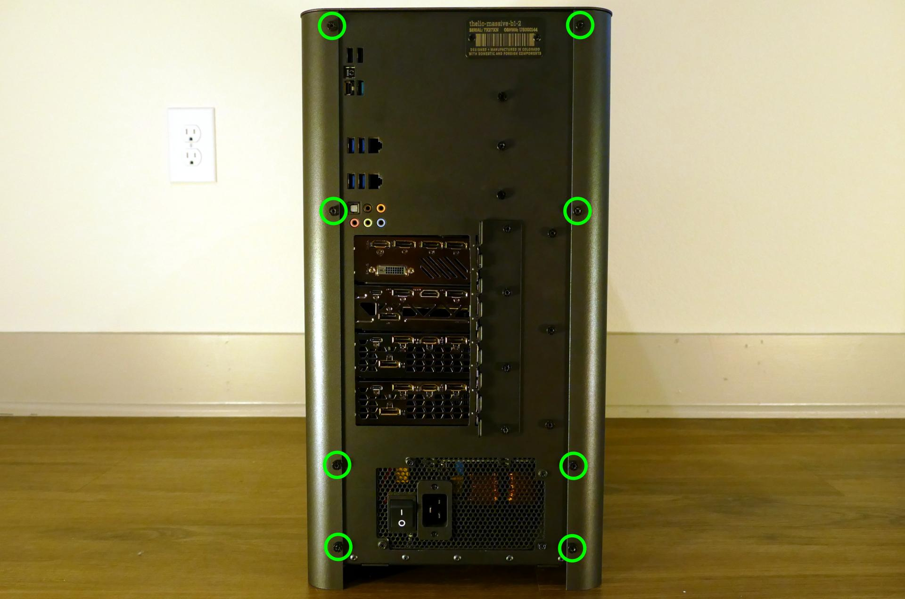
- Slide the top case up and off of the machine.
Removing the inner partition:
The inner partition provides a brace for the outer case and helps hold the internal components in place. The partition needs to be removed to access most internal components.
Tools required: Cross-head (Phillips) screwdriver (optional)
Time estimate: 5 minutes
Difficulty: Easy ●
Steps to remove the inner partition:
- Follow the steps above to remove the top case.
- Unscrew the three additional back screws holding the inner partition in place from the back.
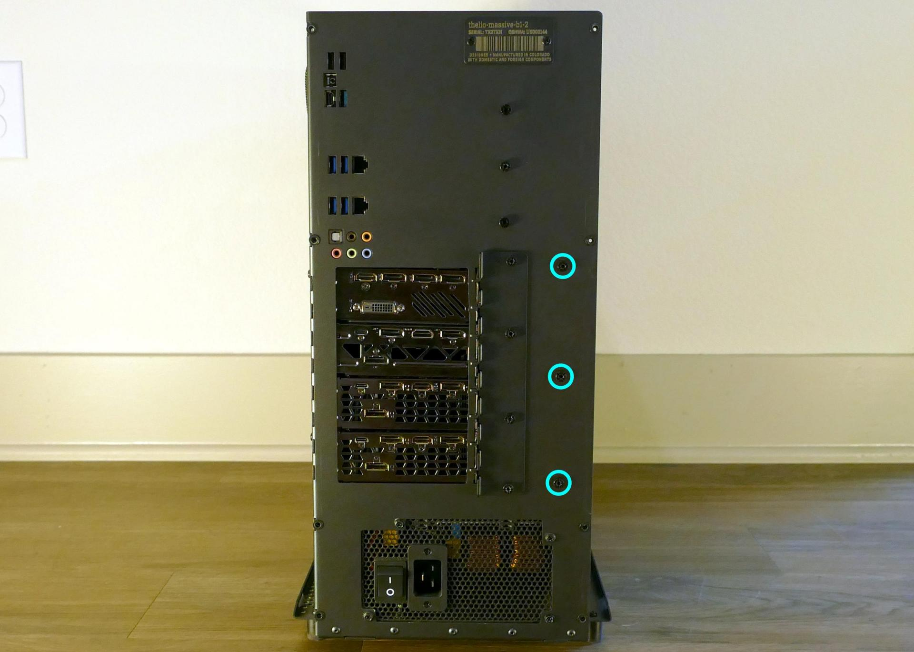
- Unscrew the three inner screws holding the partition in place from the side.

- Lift the inner partition away from the case.
Adding/removing 2.5" storage drives:
Thelio Massive b1.2 supports up to eight 2.5" SATA III drives and up to four 2.5" U.2 NVMe drives (with SAS connectors.)
Tools required: Cross-head (Phillips) screwdriver
Time estimate: 5 minutes
Difficulty: Easy ●
Steps to add/remove 2.5" storage drives:
- Follow the steps above to remove the top case and remove the inner partition.
- Unscrew the four screws holding the plastic screw cover onto the inner partition.

- Pop out one of the black plastic rings and slide four screws (per drive) out of the inner partition.

- Insert four screws into each 2.5" storage drive you wish to install.
- Slide each 2.5" drive into one of the slots above the Thelio-IO boards.

In the below photo, the eight SATA slots are highlighted green, while the four U.2/SAS slots are highlighted blue.

Replacing the case fans:
Thelio Massive b1.2 has four case-mounted fans: two on the bottom, and two on the side next to the motherboard.
Tools required: Cross-head (Phillips) screwdriver
Time estimate: 15 minutes
Difficulty: Medium ●
- Follow the steps above to remove the top case and remove the inner partition.
- Unscrew the fan's screws on the opposite side from where it's mounted. (For the bottom fans, the machine will need to be tilted to access the screws on the bottom.)

- Unplug and remove the fan.
- When replacing the fan, the components should be mounted in the following order:
- Chassis
- Dust filter
- Acrylic spacer
- Fan
Replacing a GPU:
Thelio Massive supports up to four dual-slot GPUs with PCIe 3.0 x16. Mixing NVIDIA and AMD GPUs is not recommended.
Tools required: Cross-head (Phillips) screwdriver
Time estimate: 10 minutes
Difficulty: Easy ●
Steps to replace a GPU:
- Follow the steps above to remove the top case and remove the inner partition.
- Unscrew the four back screws holding the PCIe bracket in place, then remove the PCIe bracket.
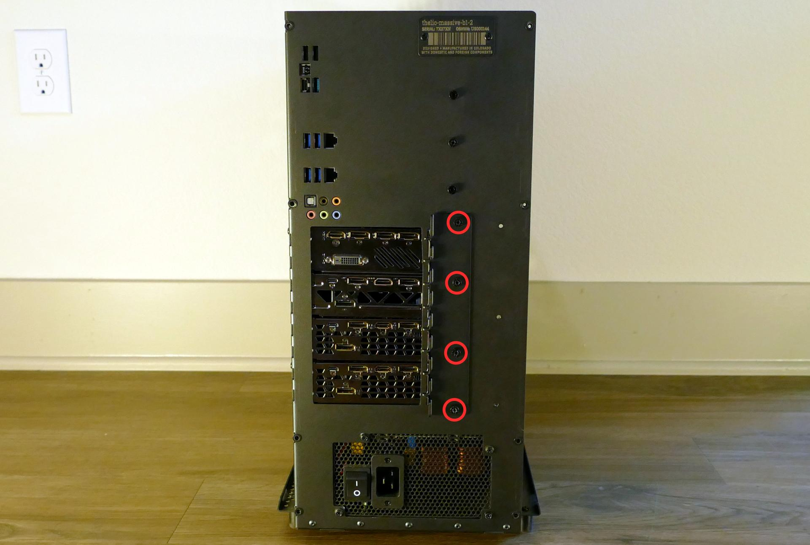
- If you're removing a GPU, unplug the GPU power cable from the right side of the card. Hold down the latch on the connector while unplugging the cable.
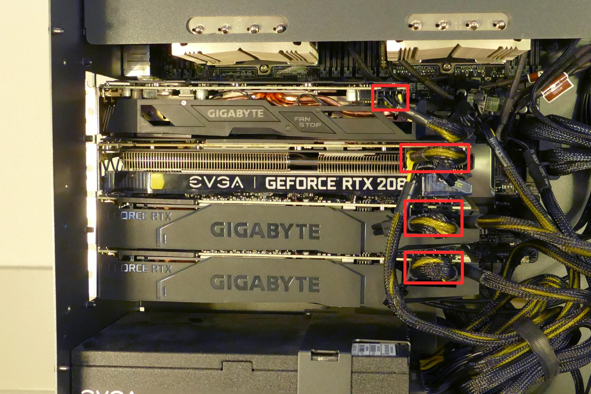
- Hold the latch on the motherboard to free the PCIe connection, then pull the card out of the slot.
- If removing one of the inner GPUs, it may be necessary to remove one of the outer GPUs first in order to reach the latch.
- If space is tight, a long object such as a screwdriver can be used to press the latch.
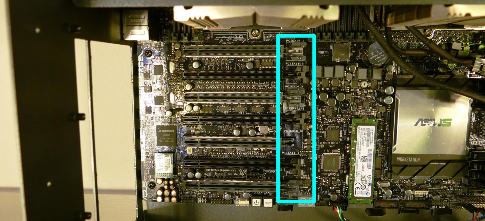
- When installing new GPUs, the slots should be utilized in the following order:
- Primary GPU: third slot from the top.
- Secondary GPU: fifth slot from the top.
- Tertiary GPU: seventh slot from the top (bottom slot).
- Quaternary GPU: top slot.
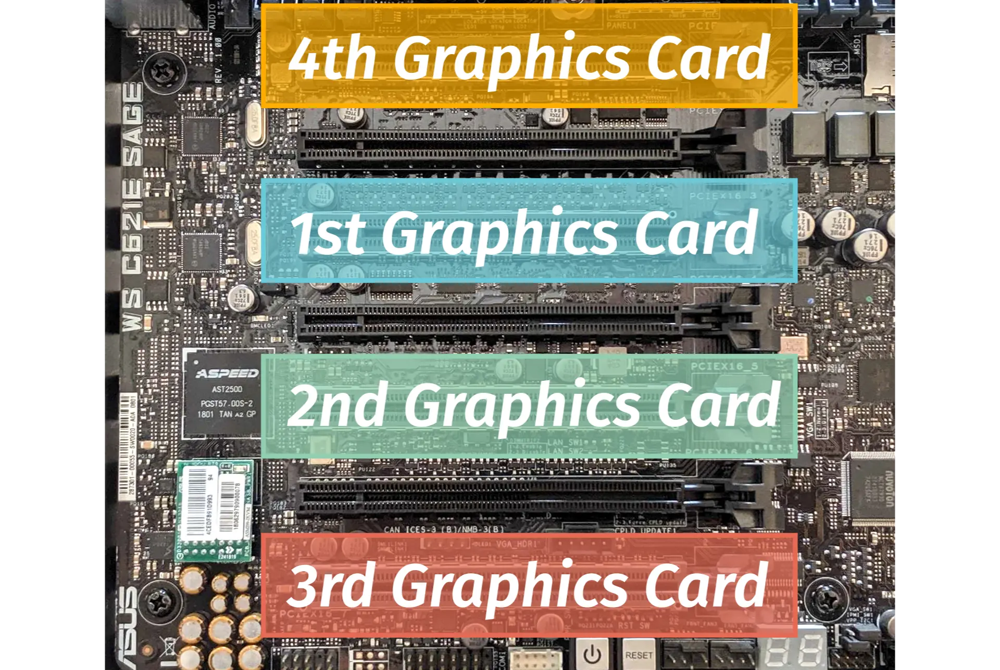
- After inserting the new GPU into its slot, connect the power cables. The maximum number of power cables are preinstalled in your system, but some may be tied back using velcro if the system shipped with less than four GPUs.
- Once all GPUs are installed, replace the back PCIe bracket, inner partition, and top case.
- The inner partition includes a plastic GPU brace, which may be sized differently depending on how many GPUs your system shipped with. To remove the brace, unscrew it from the inner partition.

The plastic GPU brace's primary function is to prevent damage during shipping. The system can be run without the brace if it doesn't fit an upgraded card; the back PCIe bracket provides primary support for the GPUs.
Replacing the M.2 drive:
Thelio Massive has one M.2 slot, which supports either PCIe NVMe Gen 3 x4 or SATA III. The following M.2 sizes are supported: 2242, 2260, 2280, 22110.
Tools required: Cross-head (Phillips) screwdriver
Time estimate: 15 minutes
Difficulty: Easy ●
Steps to replace the M.2 drive:
- Follow the steps above to remove the top case, remove the inner partition, and remove the GPUs.
- Unscrew the retainer screw opposite the M.2 slot.

- Remove the existing M.2 drive by pulling it out of the slot.
- Insert the new M.2 drive into the slot and hold it in place.
- Replace the retainer screw.
- Replace the GPUs, inner partition, and top case.
Removing the CPU duct:
The CPU duct guides airflow through the CPU coolers. It covers the CPUs and RAM slots on the motherboard.
Tools required: Cross-head (Phillips) screwdriver (optional)
Time estimate: 7 minutes
Difficulty: Easy ●
Steps to remove the CPU duct:
- Follow the steps above to remove the top case and remove the inner partition.
- Unplug the connectors for the two top exhaust fans. (The top exhaust fans are secured to the CPU duct.)
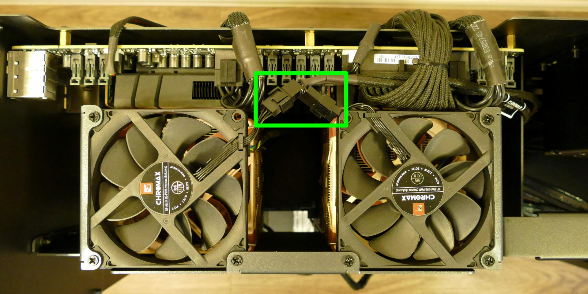
The connectors (highlighted above) attach the top exhaust fans to extension cables, which attach to a five-port hub along with the CPU fans. It is not necessary to remove the extension cables.
- Unscrew the three back screws holding the CPU duct in place.

- Unscrew the three side screws holding the CPU duct in place (on the opposite side from the motherboard.)

- Pull the CPU duct away from the machine.
Note for older revisions: thelio-massive-b1.0 included two additional screws connecting the top crossbar to the CPU duct. The top crossbar is not attached to the CPU duct on this revision.
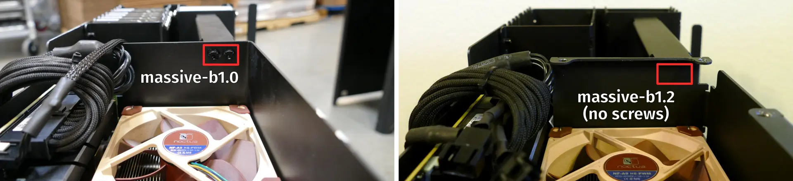
Replacing the RAM:
Thelio Massive b1.2 supports up to 1536GB (12x128GB) of RAM, or 768GB (6x128GB) per CPU. The RAM sticks are Registered ECC DDR4 DIMMs running at a speed of 2933MHz. If you've purchased new RAM, need to replace your RAM, or are reseating your RAM, follow these steps.
Tools required: Cross-head (Phillips) screwdriver (optional)
Time estimate: 15 minutes
Difficulty: Easy ●
Steps to replace the RAM:
- Follow the steps above to remove the top case, remove the inner partition, and remove the CPU duct.
- To remove an existing RAM stick, flip the top latch up away from the stick, then pull the stick out of the slot, starting from the top edge. (The bottom of the RAM slot does not move.)
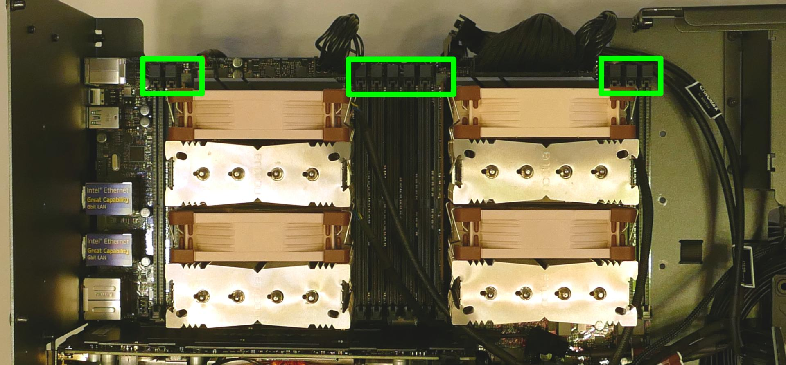
-
Insert the new RAM (or re-seat the existing RAM) into the slot. The RAM stick will only fit in one direction; the larger group of pins goes on top. Use the following guides for placement of the RAM sticks:
- Single-CPU RAM slot placement:

- Dual-CPU RAM slot placement:

- Single-CPU RAM slot placement:
-
Replace the CPU duct, inner partition, and top case.
Replacing the CPU fans:
Thelio Massive b1.2 contains four CPU fans (two per CPU.) All coolers and fans are preinstalled, regardless of how many CPUs the system shipped with.
Tools required: Cross-head (Phillips) screwdriver (optional)
Time estimate: 15 minutes
Difficulty: Easy ●
Steps to replace the CPU fans:
- Follow the steps above to remove the top case, remove the inner partition, and remove the CPU duct.
- Each fan is secured by two clips (one on each side). Pull the clip down (away from the fan), then sideways (away from the heatsink) to release the fan.

- Once the fan is free, lift it away from the heatsink and unplug the four-pin connector attaching it to the Y-cable.
- Two Y-cables connect two CPU fans each to a five-port hub, which also connects to the extension cables for the top exhaust fans.
- The top exhaust fans plug into ports "FAN1" and "FAN2", while the CPU fans plug into ports "FAN3" and "FAN4". The port labeled "CPU" is left disconnected.

- If necessary, lift the bracket off of the old fan and place it onto the new fan.
- Clip the fan back onto the heatsink and plug it into the Y-cable.
Replacing the CPU cooler:
Thelio Massive b1.2 contains two CPU coolers (one for each CPU.) Each cooler contains two fans. All coolers and fans are preinstalled, regardless of how many CPUs the system shipped with.
Tools required: Hex key (included in Thelio Massive case), cross-head (Phillips) screwdriver (optional)
Time estimate: 20 minutes
Difficulty: High ●
Steps to replace the CPU cooler:
- Follow the steps above to remove the top case, remove the inner partition, remove the CPU duct, and remove the CPU fans for the cooler you are removing.
- Locate the hex key/Allen wrench, which is attached to the case via the velcro cable ties behind the motherboard.
- While holding the cooler in place so it doesn't fall, loosen the cooler's screws in reverse order, starting with the center screws (labeled #2), then the corner screws (labeled #1).
- The corner screws require reaching the hex key through the holes in the heatsink.
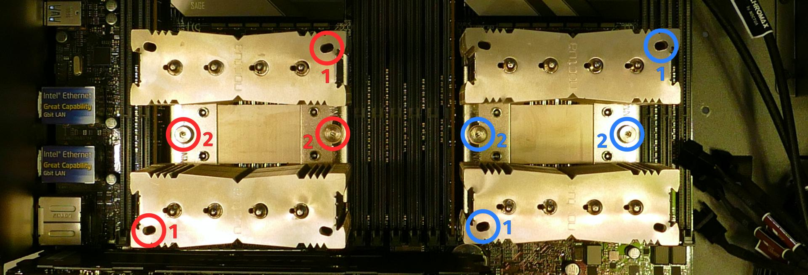
The CPU cooler screws are held in place by springs, and will not detatch once they are loosened.
- Once all four screws are loosened, the CPU cooler (including the CPU) will lift away from the motherboard.
- Caution: Be careful not to bend any of the gold pins on the CPU socket, and do not touch the gold pads on the CPU.
- When replacing the CPU cooler, tighten the screws in the order they are labeled, starting with the corner screws (labeled #1), then the center screws (labeled #2).
- See Replacing the CPU/thermal paste for more information about correctly orienting the CPU/cooler.
Replacing the CPU/thermal paste:
The CPUs clip into the heatsinks before the heatsinks are installed onto the motherboard.
Tools required: Hex key (included in Thelio Massive case), cross-head (Phillips) screwdriver (optional)
Time estimate: 25 minutes
Difficulty: High ●
Steps to replace the CPU/thermal paste:
- Follow the steps above to remove the top case, remove the inner partition, remove the CPU duct, remove the CPU fans, and remove the CPU cooler.
- The CPU is held onto the heatsink by two plastic clips. Release one of the clips by pulling down on the large plastic tab, then carefully lift the CPU off of the heatsink.
- Caution: Do not touch the gold pads on the CPU.
- It may take some pressure to break the seal of the thermal paste.

- Remove the black plastic clip from the heatsink by pulling the tabs on each corner.
- Using a paper towel, clean the existing thermal paste off of the heatsink and CPU. You may also use a small amount of rubbing alcohol if the old paste is dried or difficult to remove.
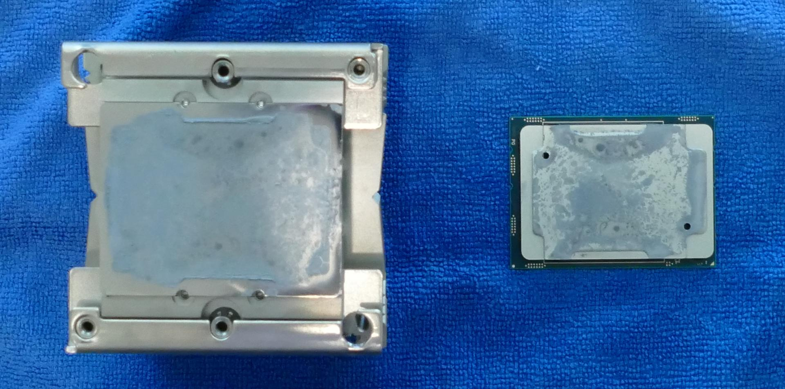
- Place the black plastic clip back onto the heatsink and apply thermal paste to the heatsink.
- Place the CPU back into the black plastic clip. One corner of the CPU and one corner of the clip are marked with triangles; be sure to match these triangles together.
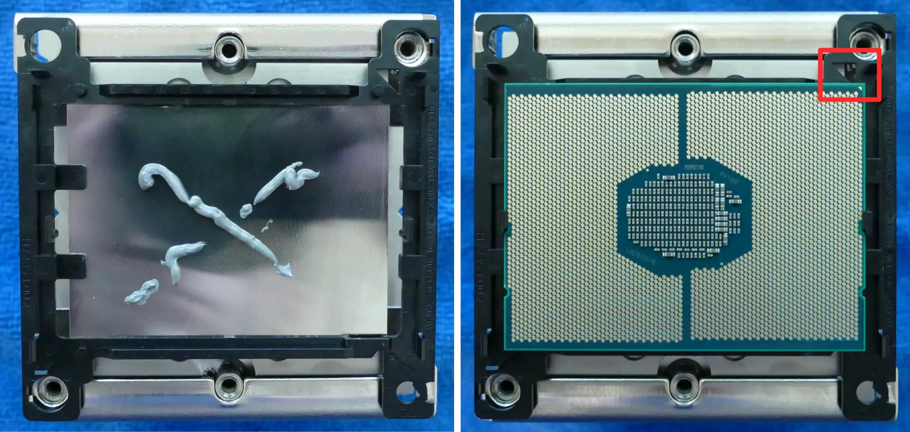
- Place the heatsink/CPU back onto the motherboard, matching the triangles on the plastic clip/CPU (highlighted above) with the diagonal corner on the CPU socket (highlighted below).
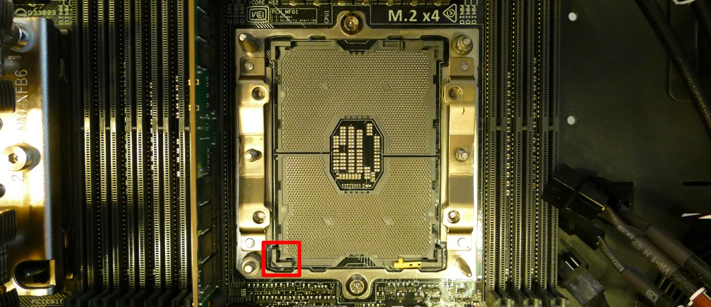
- See Replacing the CPU cooler for more information about re-attaching the cooler to the motherboard.
Replacing the top exhaust fans:
The top exhaust fans assist the CPU fans in expelling hot air from the case.
Tools required: Cross-head (Phillips) screwdriver
Time estimate: 10 minutes
Difficulty: Easy ●
Steps to replace the top exhaust fans:
- Follow the steps above to remove the top case and remove the inner partition. (The CPU duct can optionally be removed.)
- Unscrew the three screws attaching the fan to the CPU duct.
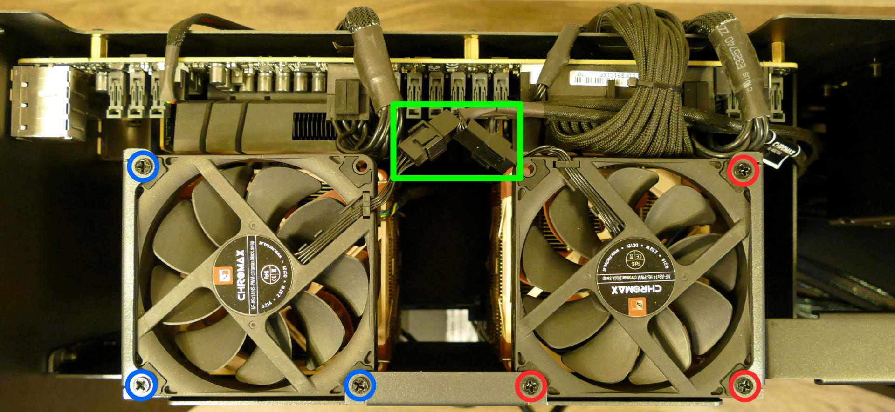
- Unplug the fan from the extension cable and remove it from the case.
- Screw the new fan into the CPU duct, plug it in, and replace the inner partition and top case.
Troubleshooting the power button:
If the front power button doesn't power the machine on or doesn't light up when the system is powered on, try the following troubleshooting steps:
- Ensure the system powers on normally using the internal power button.
- Reseat the front power button to ensure it's making proper contact.
- Check the wiring for the front power button.
- Replace the front power button, if necessary.
Tools required: Cross-head (Phillips) screwdriver (optional)
Time estimate: 20 minutes
Difficulty: Medium ●
Steps to power the machine on using the internal power button:
- Follow the steps above to remove the top case and remove the inner partition.
- Ensure the system is plugged into power, and the power supply switch is in the 1 (On) position.
- Push the small button labeled B0 on the Thelio-IO board closest to the front corner of the case.
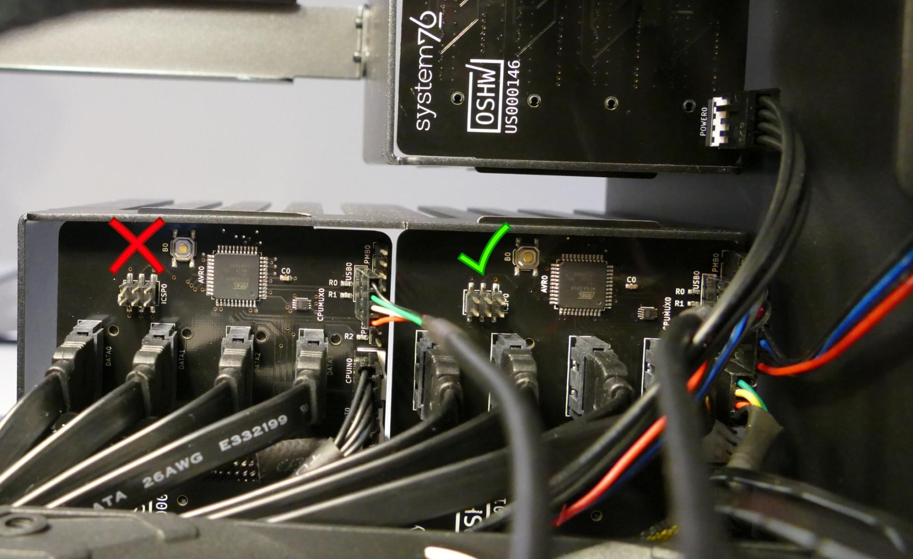
Steps to check the front power button wiring:
- Follow the steps above to remove the top case and remove the inner partition.
- On the back of the power button, the four pins should be connected to the four-wire connector as follows:

- On the front power button receptacle, the four-pin connector should have the red wire on the left and the black wire on the right.
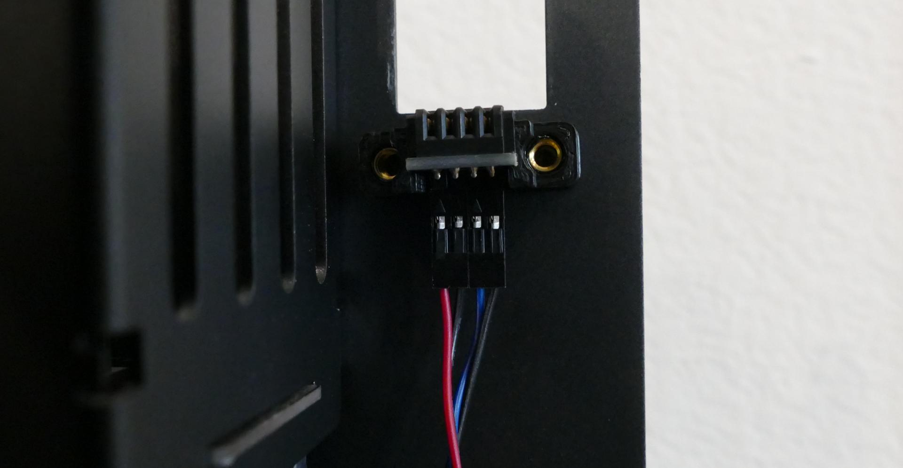
- The front power button receptacle should plug into the
PFPDport on the Thelio-IO board closest to the front corner of the machine, with the red wire on the left and the black wire on the right.

- The
PMBDport on the Thelio-IO board should connect to the motherboard:- The red wire on the four-port connector should be on the left (the farthest in) on the Thelio-IO board.
- The other side of the cable connects to the bottom right of the motherboard:
- The individual black wire plugs into
POWERLED+. - The individual red wire plugs into
POWERLED-. - The two-wire connector plugs into
POWERBTN#andGND, with the blue wire on the left (intoPOWERBTN#.)
- The individual black wire plugs into
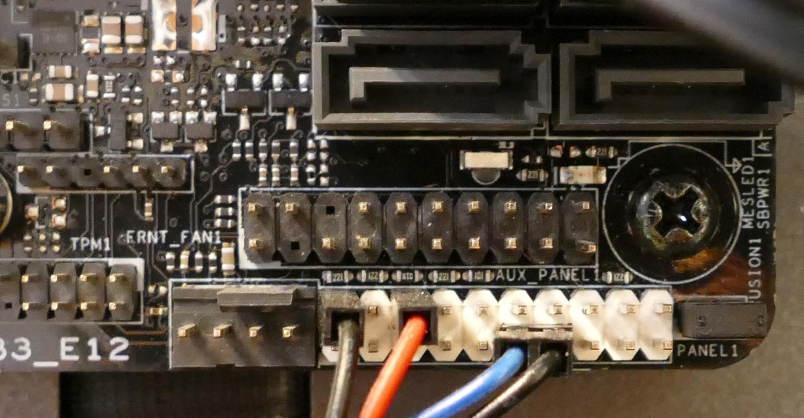
Steps to replace the power button:
- Follow the steps above to remove the top case.
- Follow the instructions in the Replace the Thelio Power Button support article.
Troubleshooting the Thelio-IO USB connection:
The Thelio-IO boards connect to the motherboard's USB headers for firmware updates and fan control within the host OS. If the fans seem to be stuck on full blast, check the Thelio-IO USB connections.
Tools required: Cross-head (Phillips) screwdriver (optional)
Time estimate: 15 minutes
Difficulty: Medium ●
Steps to check the USB wiring:
- Follow the steps above to remove the top case.
- Two of the Thelio-IO boards have
USB0ports. The port on each board connects to a four-pin cable with the red wire on the left (farthest into the case). - The two four-pin cables plug into the motherboard's USB headers just to the left of the M.2 slot.
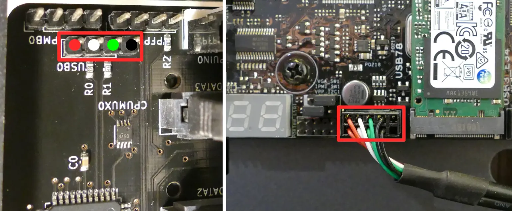